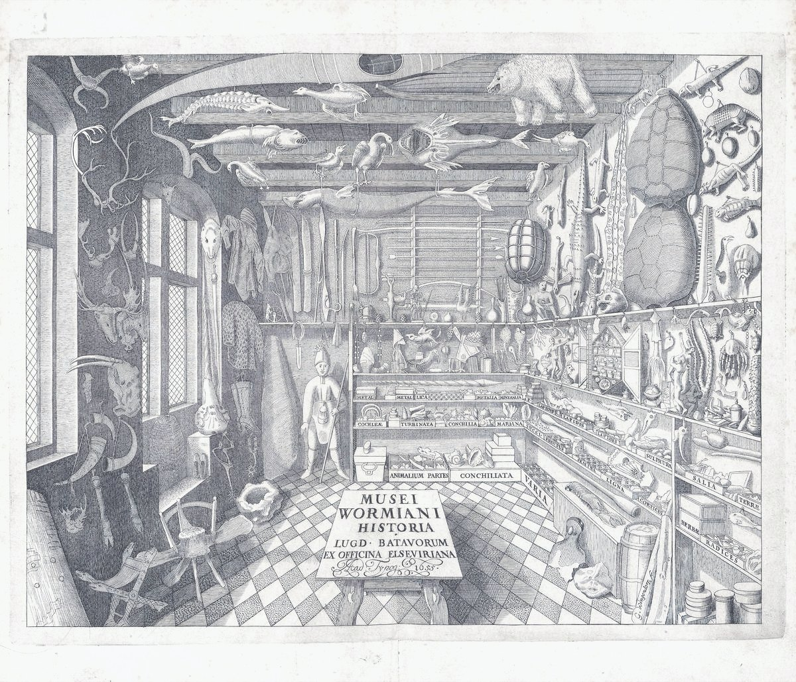

- База знаний
- Ресурсы
Ресурсы
книги, сервисы, тесты
Книги, тесты, тетради, подкасты и сервисы по теме перехода (и не только). Сюда — если своих практик и статей не хватает и хочется посмотреть, что ещё есть по теме.

Знаешь хороший ресурс или нашлась ошибка — напиши в Telegram →